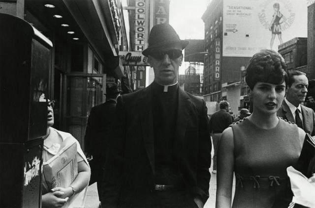
Priest, gangster, or secret agent? 1970
Lower East Side on fire, 1970s
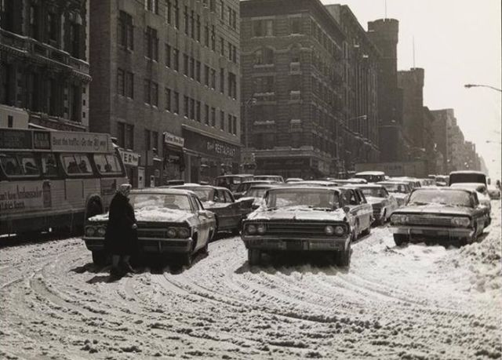
Madison, between 96th and 97th, 1972

bm-photo-collection:
“Boy on Roof” Monroe Street, New York, Walter Rosenblum, 1950, Brooklyn Museum: Photography
© Rosenblum Archive
Size: sheet: 11 × 14 in. (27.9 × 35.6 cm)
image: 10 ¾ × 13 ¼ in. (27.3 × 33.7 cm)
Medium: Gelatin silver photograph
https://www.brooklynmuseum.org/opencollection/objects/112121
Ronnie Spector sitting on a cannon in Riverside Park, 1973
Upper East Side, 1980s
Times Square in all its seedy glory, 1980s
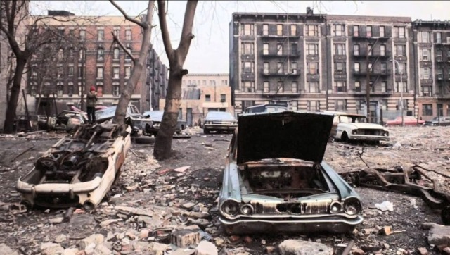
Lower East Side car graveyard, 1980s
Nice hat, outside Circus Circus, Times Square, 1981
St Marks Place, 1975
Beastie Boys looking sharp, 1986
Not in service. 1985.
Subway commuters in the 60s
Umbrellas in the snow, 1981 on Central Park South
Smokin’, drinkin’ a PBR, and lacin’ up a shirt, 1978
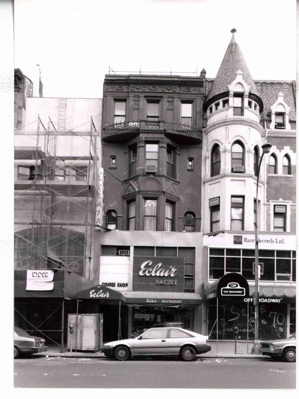
Eclair Pastry, 72nd Street, 1970s
Bronx Borough Courthouse, E. 161st Street & Third Avenue, Bronx, 1980
Abandoned car, 1975
5th Ave and 58th Street, 1969
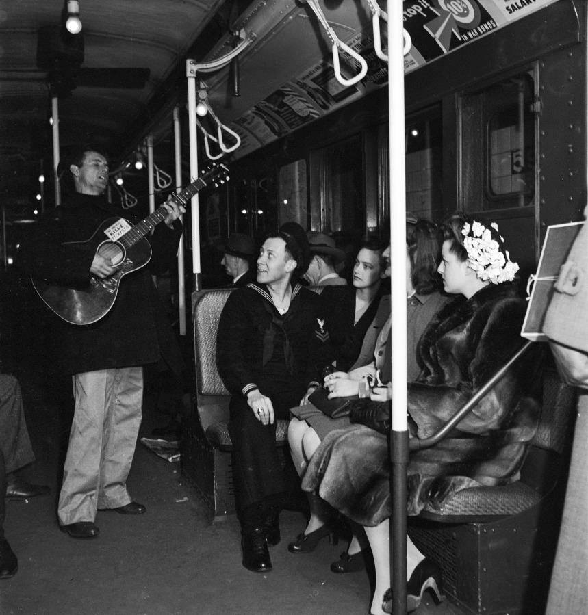
galactustheviking:
woody guthrie on an nyc subway
Chelsea, 1974
80th and Broadway, 1985, looking downtown
79th Street block party, 1979
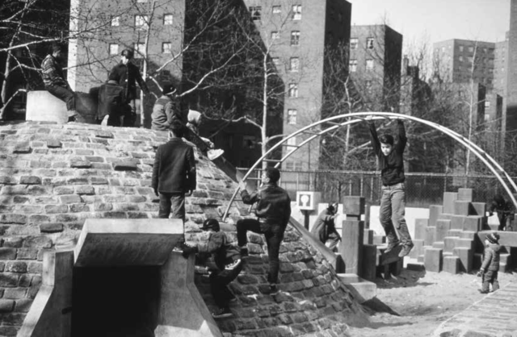
Riis Park adventure playground, 1960s
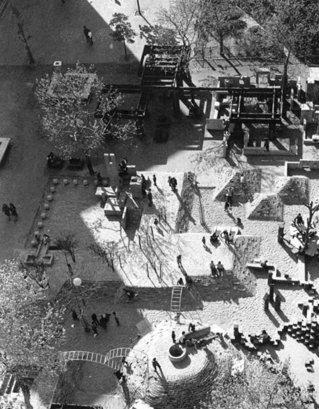
Riis Park adventure playground, 1960s
15th Street looking at 1st Ave, 1980s. Stuyvesant High School is across the street (not in frame).
Friends on the subway, 1980s
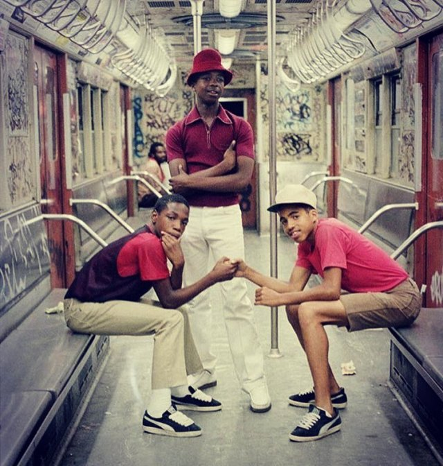
80s Pumas
Manhattan Bridge, 1987
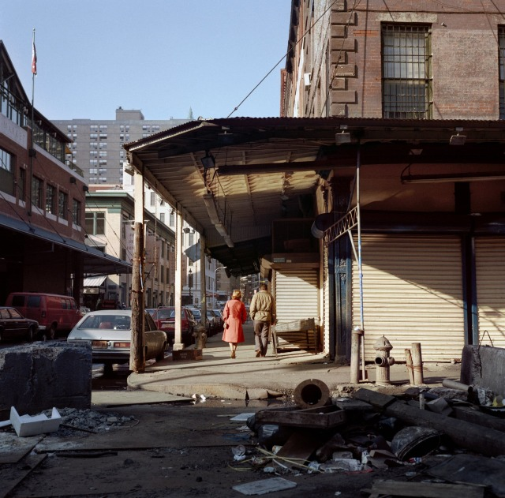
South Street and Beekman, 1984
Style & Flava on 2 train out of Brownsville, Brooklyn
Woof
Polo in Brooklyn, 1980s
West 12th Street, 1985
On strike in Rochdale Village, 1974
Rochdale Village friends, 1973
are you able to get any nostalgic pictures of rochdale village in queens nyc? haha, super specific i know.
Found this in a quick search. I’ll post a couple of pics from it…
https://rochdalevillageturns50.com/2013/06/12/rochdale-village-the-timeline-1970s-and-1980s/
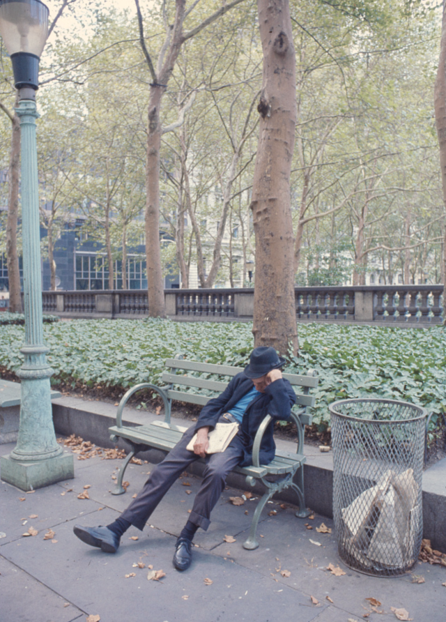
Napping near the NYPL
Winter fashion, 1975
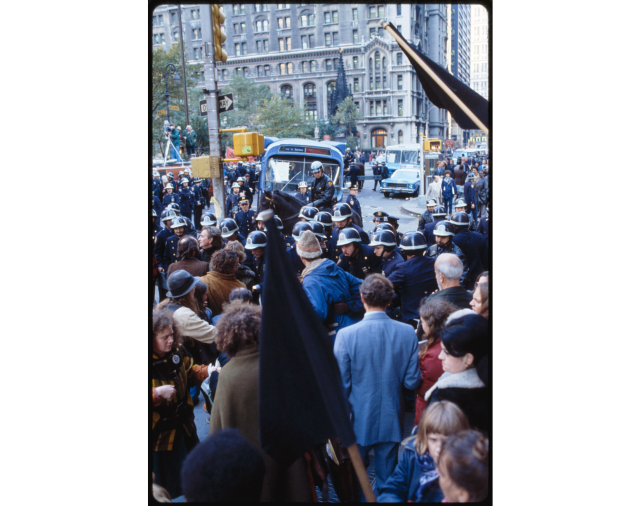
Anti-nuclear demonstration, Wall St, 1982
Brooklyn Bridge, 1983
Fire in the harbor, 1970s
Making pasta in Zabar’s, 1980
Wearing polyester, and looking at the WTC, 1973
Brighton Beach Ave, 1988
Fur bikini, 1987
Stylin’ on the D Train, 1981
Essex Street, 1981
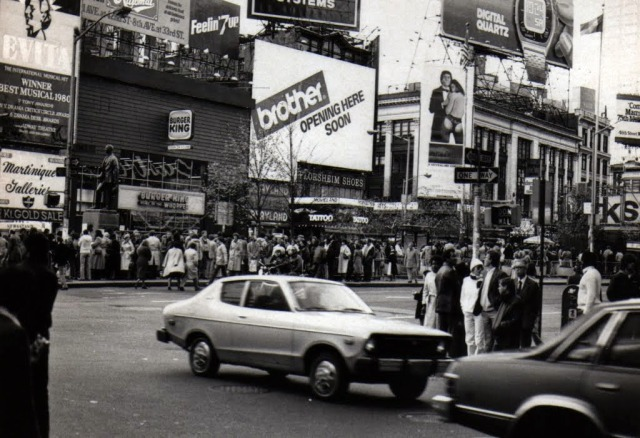
Times Square, 1981
14th Street, between 5th and 6th, 1985